### 星は燃え尽きても潰れない #### 〜静かに光り続ける50億年後の未来の太陽〜 --- ### 自己紹介 <div class="profile-container"> <div class="profile-left"> * さめ(мег-сск) * ⚛️ VRChat物理学集会の主催 * 🧑🎓 社会人学生として通信制大学在学中 * 得意分野: * 📸 コンピュータビジョン (画像認識/点群処理) * 🌍 空間情報処理 (地理情報/リモートセンシング) * ☁️ クラウドインフラ設計/IaC (AWS, GCP) * 学生時代は地球物理学を専攻 * 地球観測技術のエンジニアとして活動中 </div> <div class="profile-right"> </div> </div> --- ### 今日話すこと <div class="simple-box"> * 太陽の最期 ―「白色矮星」という不思議な天体 * なぜ燃え尽きた星が潰れないのか? * それを支える「電子縮退圧」とは何か * 白色矮星の限界: チャンドラセカール限界 </div> --- ## 太陽はなぜ潰れないのか？ ## 燃え尽きるとどうなるのか？ --- <!-- ========================================= つかみ ========================================== --> ### 太陽は最後どうなるのか? <div class="simple-box"> * 太陽は水素の核融合で燃えている: * $4 ^1 H \rightarrow ^4 He + 2 e^+ + 2 \nu_e + 26.7 \text{MeV}$ * 太陽はあと約50億年で水素を使い切る * 膨張して赤色巨星に (燃え尽きる前の最後の輝き) * そして最終形態「白色矮星」になり萎んでいく </div> <p>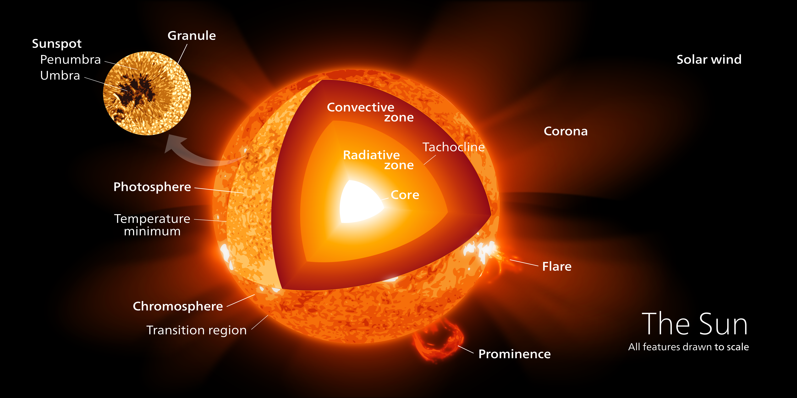</p> <div class="caption"> Credit: Kelvinsong </div> --- ### 太陽の最終形態: 白色矮星 <div class="simple-box"> * 太陽の質量を **地球サイズ** に圧縮した天体 * 核融合は停止 — つまり「燃え尽きた星」 * それでも何百億年も潰れずに静かに光り続ける </div> <p>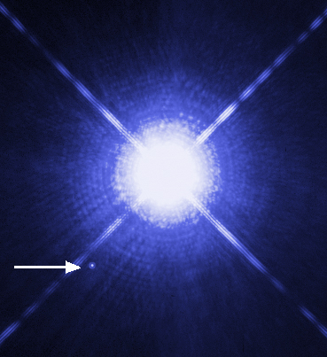</p> <br> <div class="caption"> Credit: NASA. 左下の小さな星が白色矮星、シリウスB</div> --- ## 太陽の大きさはどうやって決まるのか？ --- ### 重力と圧力のつり合い <div class="simple-box"> * 星は **自分の重力** で潰れようとする * それに対抗するのが **ガスの圧力** * 圧力を保つには熱が必要 → 核融合が熱を供給 * **重力と圧力のつり合いで星は形を保つ** </div> <p>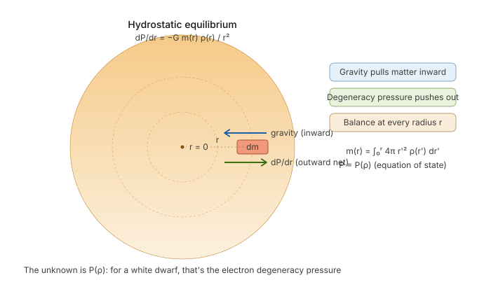</p> --- ### 風船で考えてみる <div class="simple-box"> * 風船を氷水で冷やすと **萎む** * 風船をお湯で温めると **膨らむ** * 気体の圧力は **熱(分子の運動)** から生まれる * 冷えると分子が動かなくなり、圧力が下がる * 熱すると分子が活発に動き回り、圧力が上がる </div> --- ### 素朴な疑問: 燃え尽きた星は？ <div class="highlight-box"> * **燃え尽きた星はなぜ潰れないのか？** * 熱を生まなければ、圧力は下がる * 重力でぺしゃんこに潰れて形を保てないはず </div> <br> <div class="simple-box"> * でも潰れずに白色矮星が残る * 熱がないのに、なぜ重力で潰れないのか？ * 実は **別の力** が働いている... </div> --- ### 意外！それは量子力学ッ！ <div class="highlight-box"> * **パウリの排他原理** に従って電子が生み出す圧力 * **電子縮退圧** * **量子力学** が星を支えている </div> <br> <div class="simple-box"> * 大きな星と小さな世界の物理の交差点が白色矮星 * 今日のテーマ:**量子力学 × 相対論 × 流体力学** の交差点 </div> --- <!-- ========================================= ステージ1:普通の星はなぜ潰れないのか(3〜5分) ========================================== --> ## 静水圧平衡 --- ### ニュートン力学での重力 <div class="simple-box"> * 重力は質量を持つ物体同士が引き合う力 </div> <br> <div class="highlight-box"> 質点同士に働く力は $$F = G \frac{m_1 m_2}{r^2}$$ 半径 $r$ での加速度は $$ g(r) = \frac{Gm(r)}{r^2} $$ </div> --- ### 球殻に生じる圧力 <div class="simple-box"> * 半径 $r$ の厚さ $dr$ の膜を考える (球殻) * 膜の内側から外側へ働く力は $P(r)$ * 膜の外側から内側へ働く力は $P(r +dr)$ </div> <p>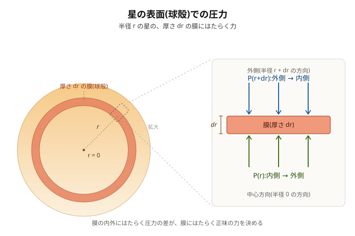</p> --- ### 静水圧平衡 <div class="simple-box"> 内向きの力と外向きの力の釣り合いから: $$ P(r) = P(r +dr) + \rho(r) \frac{Gm(r)}{r^2} dr$$ $$ \Rightarrow \frac{dP}{dr} = -\frac{G m(r) \rho(r)}{r^2}$$ </div> <br> <div class="highlight-box"> * 形を維持した星で重力と圧力が満たしている関係 * **静水圧平衡** </div> --- ### 太陽の圧力源: 核融合の熱 <div class="simple-box"> * 静水圧平衡の式は「何が圧力を生むのか？」は一切議論していない * 太陽は水素の核融合の熱が圧力を生んでいる </div> <p>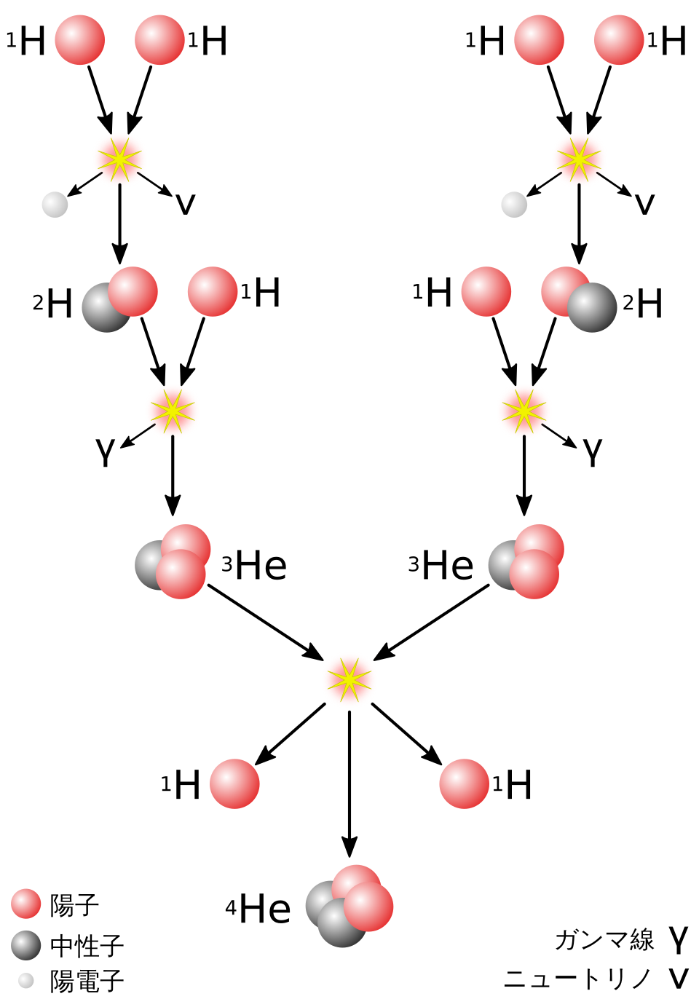</p> --- ### ようこそ...『量子の世界』へ... <div class="simple-box"> * 「圧力 = 熱」の **古典物理** では燃え尽きて熱を生まない白色矮星を説明できない * **ようこそ...『量子の世界へ』...** </div> <div class="caption">引用: 荒木飛呂彦、「ジョジョの奇妙な冒険 第7部 スティール・ボール・ラン」</div> --- <!-- ========================================= ステージ2:量子力学の登場 ========================================== --> ## 電子縮退圧 --- ### 不確定性原理 <div class="simple-box"> * **量子の位置と運動量は広がりを持つ** * 両者の分散の積は下限が存在する </div> <br> <div class="highlight-box"> $$ \Delta x \Delta p \geq \frac{\hbar}{2}$$ </div> --- ### 視覚的に捉える不確定性原理 <div class="simple-box"> * 横軸に位置、縦軸に運動量を取る平面を考える * $\Delta x, \Delta p$ で格子を区切る * **量子の位置と運動量は面では捉えられるが点では捉えられない** * 長方形の面積 $\approx h$ </div> <p>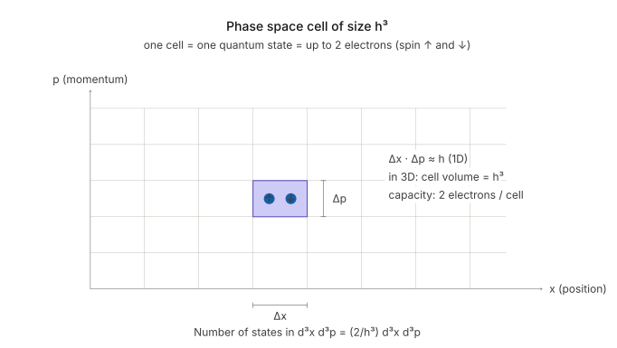</p> --- ### パウリの排他律 <div class="simple-box"> * 電子(などのフェルミオン)は位置、運動量、スピンのすべてが同一の状態を取れない * スピン(超ざっくり): 電子の角運動量、時計回りか反時計回りかのどっちか ($\pm \hbar /2 $ ) * 位置と運動量で区切った格子の中に電子は2個までしか入らない (異なるスピンの向き) </div> --- ### 電子の席取りゲーム <div class="simple-box"> * 1つの格子は最大2個の電子しか入れない * 格子が埋まっていると電子は別の格子に入らざるを得ない * 電子を詰め込むと高い運動量を持つ電子が表れる </div> <p>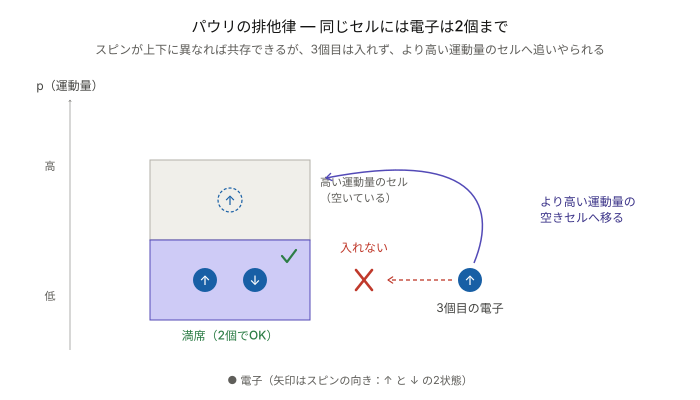</p> --- ### 電子縮退圧 <div class="simple-box"> * 詰め込まれた電子は冷めても消えない運動量を持つ (絶対零度でも！) * 運動する電子が圧力を生む * これを **電子縮退圧** と呼ぶ </div> <p>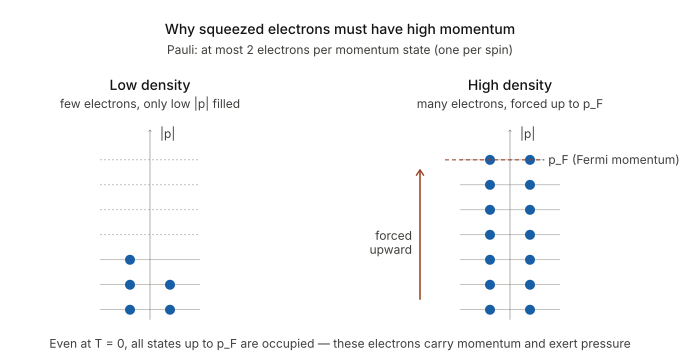</p> --- ### 静水圧平衡の振り返り <div class="simple-box"> * 普通の星: **熱的ガス圧** vs 重力 * 白色矮星: **電子縮退圧** vs 重力 $$ \frac{dP}{dr} = -\frac{G m(r) \rho(r)}{r^2}$$ </div> <br> <div class="highlight-box"> * **静水圧平衡**の式は圧力源に依存しない * 圧力源が変わっただけで力の釣り合いの構造は同じ！ </div> --- ## 6次元位相空間での ## 電子数密度と電子縮退圧 --- ### 電子縮退圧と電子 <div class="simple-box"> * 電子は熱がなくても圧力を生み出す * ここでは絶対零度 $T=0$ で考える * しかしどのくらいの数の電子が集まるとどのくらいの圧力になるかは一切議論していない * 電子が生み出す圧力を考えていこう * 位相空間の格子の中にどのように電子が埋まっていくのか？ </div> --- ### 位相空間の格子と電子数 <div class="simple-box"> * (1次元の場合) 格子は面積 $h$で電子が2個まで入る * $dx dp$ の中に入る電子の数$dN$は $$ dN = \frac{2}{h} dx dp $$ </div> <p>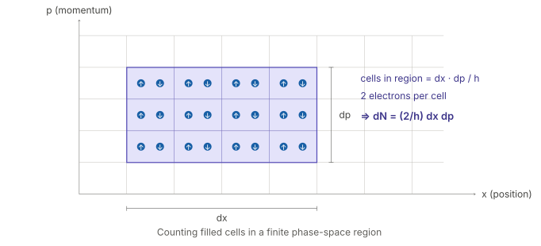</p> --- ### 座標3成分・運動量3成分の ### 6成分位相空間 <div class="simple-box"> 位置: $\vec{r}=(x, y, z)$ <br> 運動量: $\vec{p}=(p_x, p_y, p_z)$ * 合計6成分の位相空間を考える </div> <br> <div class="simple-box"> * 6成分の空間を格子で区切って1つ1つの格子に2つずつ電子が入っていく * $x$, $p$の2成分の時と考え方は同じ </div> --- ### 6成分位相空間の電子数 <div class="simple-box"> * 座標3成分・運動量3成分に拡張: * 1つの格子の体積は $h^3$ * 同じく1格子に電子2個 $$ dN = \frac{2}{h^3} d^3x d^3p $$ </div> <br> * 位相空間の微小体積要素 $d^3x d^3p$ の中に入る電子の数 --- ### フェルミ球 <div class="simple-box"> * 位置 $\vec{r}$ を固定して考える * 運動量空間の球の内側から電子が埋まる (**縮退**) * この球を **フェルミ球** と呼ぶ * フェルミ球の半径を **フェルミ運動量** $p_F$ と呼ぶ </div> <p>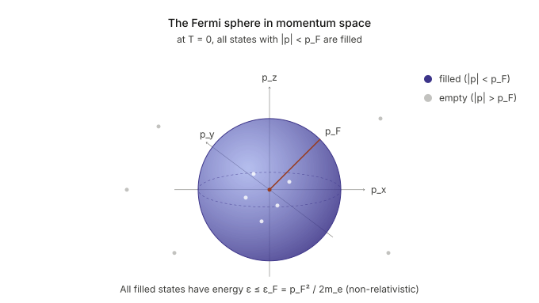</p> --- ### フェルミ球に詰まる電子の数 <div class="simple-box"> * 体積 $V$ の各位置で、フェルミ球 ($|\vec{p}| \le p_F$) の中を電子が埋め尽くす * フェルミ球の運動量空間での体積は $\dfrac{4\pi}{3} p_F^3$ * 空間方向に足し合わせると、6次元位相空間で電子が占める体積は $$ V \cdot \frac{4\pi}{3} p_F^3 $$ </div> --- ### 位相空間の電子数密度 <div class="simple-box"> * この中に体積 $h^3$ の格子がいくつ入るかを数えれば電子数 $N$ が求まる $$ N = \frac{2}{h^3} V \cdot \frac{4\pi}{3} p_F^3 $$ </div> <br> <div class="highlight-box"> 電子数密度 $n_e = N/V$ は $$ n_e = \frac{8\pi}{3h^3} p_F^3 $$ </div> --- ### フェルミ運動量と電子数密度 <div class="simple-box"> * フェルミ運動量 $p_F$ は電子数密度の1/3乗に比例する * フェルミ運動量は温度に依存しない (絶対零度でも電子は運動する！) $$ p_F = \left( \frac{3 n_e}{8\pi} \right)^{1/3} h $$ </div> --- ### 運動量と圧力 <div class="simple-box"> * 粒子の運動量分布を $f(\vec{p})$ * 速度を $v(p)$ とする ($p = ||\vec{p}||$) * 生じる圧力は $$ P = \dfrac{1}{3} \int p v(p) f(\vec{p}) d^3 p$$ </div> --- ### 電子の速度と運動量分布 <div class="simple-box"> * フェルミ球の内側は電子で詰まっている * フェルミ球の外側は電子がいない $$ f(\vec{p}) = \begin{cases} 2/h^3 & (0 \leq p \leq p_F) \\\\ 0 & (p > p_F) \end{cases} $$ </div> <br> <div class="simple-box"> * 速度は単純に $v(p) = p/m_e$ </div> --- ### 電子縮退圧の導出 <div class="simple-box"> * 速度・運動量分布と圧力の関係式、電子数密度とフェルミ運動量の関係から $$ \begin{align*} P &= \dfrac{h^2}{5m_e} \left( \dfrac{3}{8 \pi} \right)^{2/3} n_e^{5/3} \\\\ &= K n_e^{5/3} \end{align*} $$ </div> <br> <div class="highlight-box"> * **電子縮退圧は電子数密度の5/3乗に比例する** </div> --- <!-- ========================================= ステージ3: 相対論的縮退圧とチャンドラセカール限界 ========================================== --> ## 相対論的縮退圧と ## チャンドラセカール限界 --- ### 重い白色矮星で何が起きるか？ <div class="simple-box"> * 星が重くなるほど電子密度が上がり、フェルミ運動量も上がる: $p_F \propto n_e^{1/3}$ * しかし電子の速度は **光速** という絶対的な上限がある、いつまでも際限なく上げ続けられない </div> <br> <div class="highlight-box"> * $p_F \sim m_e c$ を超えるあたりから、$v=p/m_e$ では $v>c$ となり破綻する * **「運動量=質量×速度」が使えなくなる** * ❌: $v = p/m_e$ (ニュートン力学) * ✅: $v \to c$ (超相対論的極限) </div> --- ### 相対論的極限での圧力 <div class="simple-box"> * 圧力の表式は変わらない、$v=p/m_e$ を $v=c$ に置き換えるだけ $$ P = \dfrac{1}{3} \int_0^{p_F} cp \\, f(\vec{p}) \\, d^3 p $$ </div> --- ### 圧力の上がり方が緩やかに <div class="simple-box"> * $p_F$ が1つ消えて $c$ に置き換えられる * 指数が下がり $P \propto n_e^{5/3}$ から $ P \propto n_e^{4/3} $ となる $$ \begin{align*} P &= \dfrac{hc}{4} \left( \dfrac{3}{8\pi} \right)^{1/3} n_e^{4/3} \\\\ &= K' n_e^{4/3} \end{align*} $$ </div> <br> <div class="highlight-box"> * 同じ圧縮に対する圧力の上がり方が **緩く** なる </div> --- ### 次元解析でつかむ質量と半径 <div class="simple-box"> * 静水圧平衡の式をオーダー評価する: $$ \dfrac{dP}{dr} \sim \dfrac{P}{R}, \quad \rho \sim \dfrac{M}{R^3} $$ * これを $\dfrac{dP}{dr} = -\dfrac{G m(r) \rho(r)}{r^2}$ に当てはめると $$ \dfrac{P}{R} \sim \dfrac{G M^2}{R^5} \quad \Rightarrow \quad P \sim \dfrac{G M^2}{R^4} $$ </div> --- ### 非相対論での半径と質量の関係 <div class="simple-box"> * 電子縮退圧は電子数密度の5/3乗に比例 $$ P \propto n_e^{5/3} \propto \rho^{5/3} \propto (M/R^3)^{5/3} = \dfrac{M^{5/3}}{R^5} $$ 静水圧平衡より $$ \dfrac{G M^2}{R^4} \sim \dfrac{M^{5/3}}{R^5} \\, \Rightarrow \\, R \propto M^{-1/3} $$ </div> <br> <div class="highlight-box"> * **重くなるほど半径が小さくなる！** </div> --- ### 相対論的極限: 半径が消える！ <div class="simple-box"> * 超相対論的縮退圧と静水圧平衡から: $$ P \propto n_e^{4/3} \propto \rho^{4/3} \propto \left( \dfrac{M}{R^3} \right)^{4/3} = \dfrac{M^{4/3}}{R^4} $$ $$ \dfrac{M^{4/3}}{R^4} \sim \dfrac{G M^2}{R^4} \\, \Rightarrow \\, M \sim G^{-3/2} $$ </div> <br> <div class="highlight-box"> * **半径が消えた...？** </div> --- ### 半径が消えたことをどう考える？ <div class="simple-box"> * $P \propto n_e^{4/3}$ のときの質量を $M_{\rm Ch}$ と書く * $M_{\rm Ch}$ より軽いとき * ある半径で電子縮退圧と重力が釣り合う * $ M_{\rm Ch}$ のとき: * 圧力と重力がギリギリ釣り合うが半径はゼロ (あり得ない) * $M_{\rm Ch}$ より重いとき * 圧力は重力に絶対に勝てない * 潰れ続ける </div> --- ### チャンドラセカール限界 <div class="simple-box"> * この電子縮退圧と重力がギリギリ釣り合う質量を**チャンドラセカール限界**と呼ぶ $$ M_{\rm Ch} \sim \dfrac{1}{m_u^2} \left( \dfrac{\hbar c}{G} \right)^{3/2} $$ </div> <br> <div class="highlight-box"> * **白色矮星には質量の上限がある** * 太陽質量の約1.46倍: $M_{\rm Ch} \simeq 1.46M_\odot$ </div> --- ### 限界を超えた白色矮星: Ia型超新星 <div class="simple-box"> * 白色矮星が周囲の物質を取り込んで $M_{\rm Ch}$ を超える * 重力で自分を支えきれず爆発する * **宇宙の標準光源** (明るさ & 質量が一定だから！) </div> <p>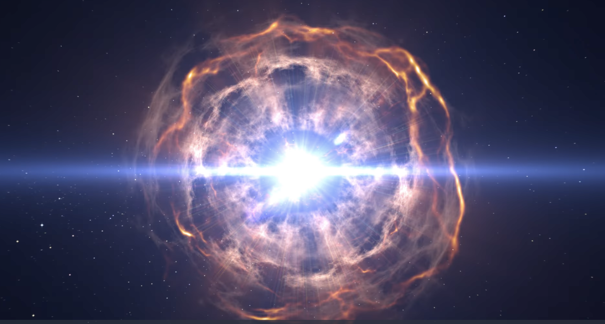</p> --- ### 太陽よりはるかに重い星が燃え尽きると？ <div class="simple-box"> * そもそも白色矮星になれない ($M \gtrapprox 8M_\odot$) * 重力による圧縮で中心密度が上がり、電子と陽子が合体して中性子になる (逆ベータ崩壊) * 今度は **中性子の縮退圧** で支える → **中性子星** * さらに重ければもはや何にも止められなくなる → すべてを重力で飲み込む**ブラックホール** </div> <br> <div class="highlight-box"> * チャンドラセカール限界は宇宙論を広げた発見 * **「潰れない星」は次のステージへ！** </div> --- ### 量子力学 × 相対論 × 流体力学 <div class="simple-box"> * **量子力学**: 不確定性原理とパウリの排他原理が電子の縮退圧を生む * **相対論**: 電子は光速を超えられず、白色矮星には限界質量がある * **流体力学**: 静水圧平衡の重力と圧力の釣り合い </div> <br> <div class="highlight-box"> **ミクロな量子の理論が、マクロな星の構造を決めている** </div> --- <!-- ========================================= まとめと次回予告(1〜2分) ========================================== --> ### まとめ <div class="simple-box"> 1. 普通の星は **核融合の熱** で重力を支える 2. 燃え尽きた星は熱がないので潰れる **はず** 3. でも白色矮星は **電子縮退圧** で支えられている 4. 温度に依存しない、量子力学が生む圧力 5. ただし支えられる質量には上限がある: **チャンドラセカール限界 (~1.46 $M_\odot$)** </div> <br> <div class="highlight-box"> * **白色矮星は量子の力で潰れない！** * ただし太陽質量の1.46倍まで </div> --- ### 今日の話の限界 <div class="simple-box"> * 重力は **ニュートン力学** で扱っている * 中性子星のような強重力場では **一般相対論** が必要 * 電子間の **クーロン相互作用** を無視している * 実際の白色矮星内部では結晶化(イオン格子の形成)が起きる * **絶対零度** で考えている * 有限温度補正、冷却の時間スケール * 自転や磁場の効果も考えていない </div> --- ### LT登壇者の募集 <div class="simple-box"> * 物理学集会ではLT登壇者を募集しています！ * どんなジャンルでもOK！ * 興味のある方は物理学集会のDiscordサーバーまで！ </div> <img src="assets/images/qrcode.png" width="200px">